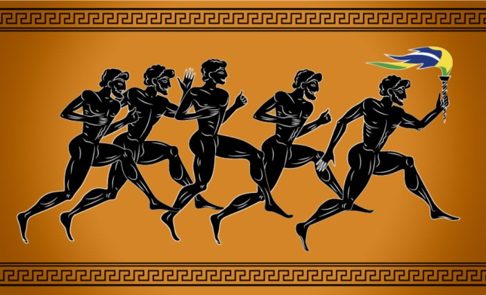
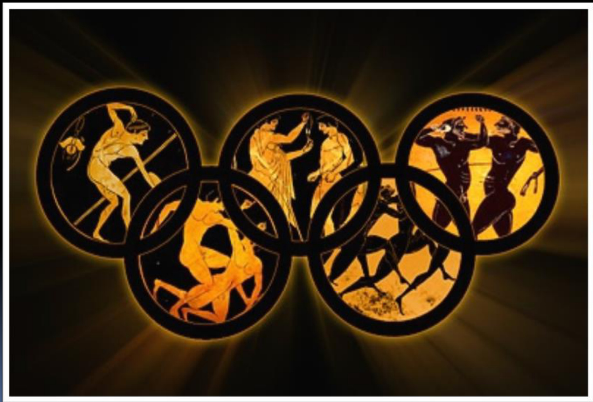
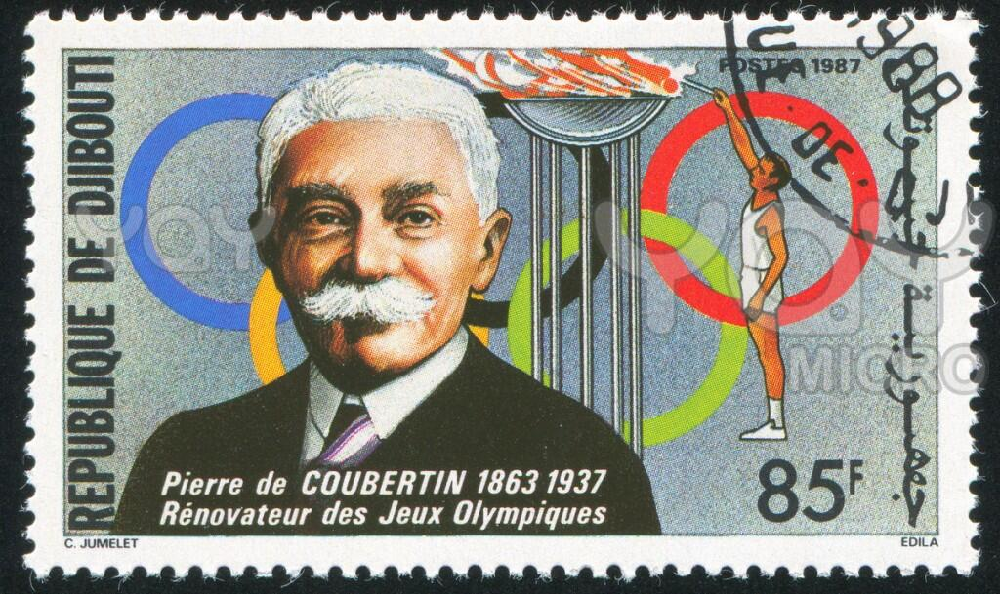
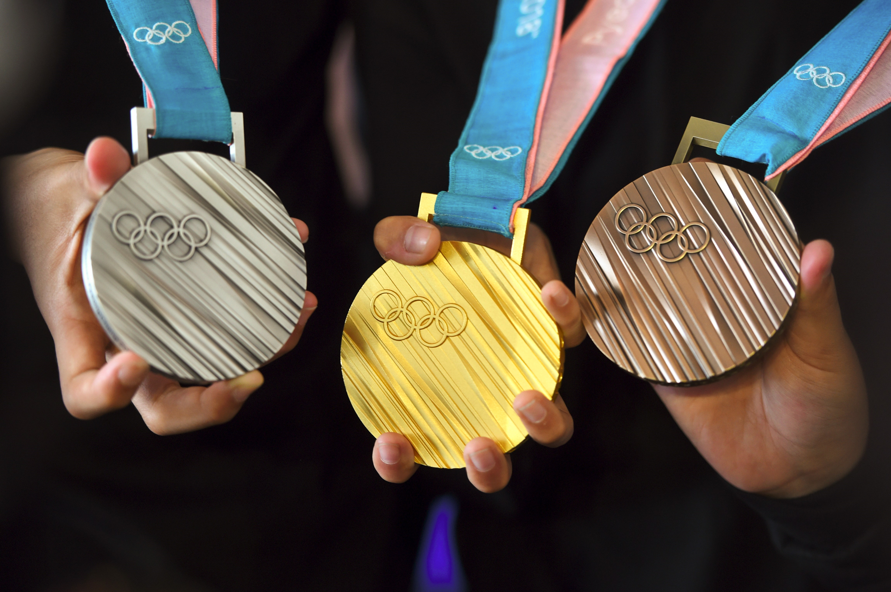

Античные Олимпийские игры
 Олимпийские игры Древней Греции представляли собой религиозный и спортивный праздник, проводившийся в Олимпии. Сведения о происхождении игр утеряны, но сохранилось несколько мифов, описывающих это событие (по преданию игры были учреждены Гераклом). Из истории к нам дошло множество документов, строений и скульптур того периода. Первое документально подтверждённое празднование относится к 776 году до н. э. На время проведения Игр объявлялось священное перемирие, в это время нельзя было вести войну, хотя данное правило неоднократно нарушалось. Олимпийские игры существенно потеряли своё значение с приходом римлян. После того, как христианство стало официальной религией, игры стали рассматриваться как проявление язычества, и в 394 году н. э. они были запрещены императором Феодосием I.
Возрождение Олимпийских игр
 Олимпийская идея и после запрета античных состязаний не исчезла насовсем. Например, в Англии в течение XVII века неоднократно проводились «олимпийские» соревнования и состязания. Позже похожие соревнования организовывались во Франции и Греции. Тем не менее, это были небольшие мероприятия, носившие, в лучшем случае, региональный характер. Первыми настоящими предшественниками современных Олимпийских игр являются «Олимпии», которые проводились регулярно в период 1859—1888 годов. Идея возрождения Олимпийских игр в Греции принадлежала поэту Панайотису Суцосу, воплотил её в жизнь общественный деятель Евангелис Заппас. В 1866, в результате археологических раскопок в Олимпии, были обнаружены спортивные и храмовые сооружения. В 1875 году археологические исследования и раскопки продолжились под немецким руководством. В то время в Европе были в моде романтическо-идеалистические представления об античности. Желание возродить олимпийское мышление и культуру распространилось довольно быстро по всей Европе. Французский барон Пьер де Кубертен (фр. Pierre de Coubertin),
осмысливая впоследствии вклад Франции, сказал: «Германия раскопала то, что осталось от древней Олимпии. Почему Франция не может восстановить старое величие?». По мнению Кубертена, именно слабое физическое состояние французских солдат стало одной из причин поражения французов в Франко-прусской войне 1870—1871. Он стремился изменить положение с помощью улучшения физической культуры французов. Одновременно с этим, он хотел преодолеть национальный эгоизм и внести вклад в борьбу за мир и международное взаимопонимание. «Молодёжь мира» должна была мериться силами в спортивных состязаниях, а не на полях битв. Возрождение Олимпийских игр казалось в его глазах лучшим решением, чтобы достичь обеих целей. На конгрессе, проведённом 16-23 июня 1894 года в Сорбонне (Парижский университет), он представил свои мысли и идеи международной публике. В последний день конгресса было принято решение о том, что первые Олимпийские игры современности должны состояться в 1896 году в Афинах, в стране-родоначальнице Игр — Греции. Чтобы организовать проведение Игр, был основан Международный олимпийский комитет (МОК). Первым президентом Комитета стал грек Деметриус Викелас, который был президентом до окончания I Олимпийских игр 1896 года. Генеральным секретарём стал барон Пьер де Кубертен.
 Первые Игры современности прошли с большим успехом. Несмотря на то, что участие в Играх принял всего 241 атлет (14 стран), Игры стали крупнейшим спортивным событием, прошедшим когда-либо со времён Древней Греции. В заплыве на 100 м приняли участие военные моряки Греческой армии. Греческие официальные лица были так довольны, что выдвинули предложение о «вечном» проведении Игр Олимпиады на их родине, в Греции. Но МОК ввёл ротацию между разными государствами, чтобы каждые 4 года Игры меняли место проведения. После первого успеха, олимпийское движение испытало и первый кризис. II Олимпийские игры 1900 года в Париже (Франция) и III Олимпийские игры 1904 года в Сент-Луисе (штат Миссури, США) были совмещены со Всемирными выставками. Спортивные соревнования тянулись месяцами и почти не пользовались интересом у зрителей. На Олимпиаде-1900 в Париже впервые участвовали женщины и команда Российской империи. На Олимпиаде-1904 в Сент-Луисе участвовали почти исключительно американские спортсмены, так как из Европы добраться через океан в те годы было очень сложно по техническим причинам. На внеочередных Олимпийских играх 1906 года в Афинах (Греция) вновь вышли на первое место спортивные соревнования и достижения. Хотя МОК первоначально признавал и поддерживал проведение этих «промежуточных Игр» (всего через два года после предыдущих), сейчас эти Игры не признаются олимпийскими. Некоторые спортивные историки считают Игры 1906 спасением олимпийской идеи, так как они не дали играм стать «бессмысленными и ненужными».
Современные Олимпийские игры
 Символ Олимпийских игр — олимпийские кольца, пять скреплённых колец, символизирующих объединение пяти обитаемых частей света в олимпийском движении. Цвет колец в верхнем ряду — голубой, чёрный и красный. В нижнем ряду — жёлтый и зелёный. Вопреки распространённой версии, каждое из колец не относится к какому-то конкретному континенту[6]. Олимпийское движение имеет свои эмблему и флаг, утверждённые МОК по предложению Кубертена в 1913. Эмблема — олимпийские кольца. Девиз — Citius, Altius, Fortius (лат. «быстрее, выше, сильнее»). Флаг — белое полотнище с олимпийскими кольцами, поднимается на всех Играх, начиная с VII Олимпийских игр 1920 года в Антверпене (Бельгия), где также впервые стала даваться олимпийская клятва. Парад национальных команд под флагами при открытии Игр проводится начиная c IV Олимпийских игр 1908 года в Лондоне (Великобритания). С Олимпиады-1936 в Берлине (Германия) проводится эстафета олимпийского огня. Олимпийские талисманы впервые появились на летних и зимних Играх 1968 года неофициально, а утверждаются с Олимпиады-1972 года. Среди традиционных ритуалов Игр (в порядке их проведения):
Символ Олимпийских игр — олимпийские кольца, пять скреплённых колец, символизирующих объединение пяти обитаемых частей света в олимпийском движении. Цвет колец в верхнем ряду — голубой, чёрный и красный. В нижнем ряду — жёлтый и зелёный. Вопреки распространённой версии, каждое из колец не относится к какому-то конкретному континенту[6]. Олимпийское движение имеет свои эмблему и флаг, утверждённые МОК по предложению Кубертена в 1913. Эмблема — олимпийские кольца. Девиз — Citius, Altius, Fortius (лат. «быстрее, выше, сильнее»). Флаг — белое полотнище с олимпийскими кольцами, поднимается на всех Играх, начиная с VII Олимпийских игр 1920 года в Антверпене (Бельгия), где также впервые стала даваться олимпийская клятва. Парад национальных команд под флагами при открытии Игр проводится начиная c IV Олимпийских игр 1908 года в Лондоне (Великобритания). С Олимпиады-1936 в Берлине (Германия) проводится эстафета олимпийского огня. Олимпийские талисманы впервые появились на летних и зимних Играх 1968 года неофициально, а утверждаются с Олимпиады-1972 года. Среди традиционных ритуалов Игр (в порядке их проведения):
грандиозные и красочные церемонии открытия и закрытия Игр. К разработке сценариев этих зрелищ из года в год привлекают лучших из лучших со всего мира: сценаристов, организаторов массовых шоу, специалистов по спецэффектам и так далее. Многие известные певцы, актёры и другие весьма именитые персоны стремятся принять участие в этом зрелище. Трансляции этих событий каждый раз бьют рекорды зрительского интереса. Каждая страна-организатор Олимпиады стремится превзойти по размаху и красоте этих церемоний всех предыдущих. Сценарии церемоний держатся в строжайшей тайне вплоть до их начала. Церемонии проходят на центральных стадионах с большой вместимостью, там же где проводятся соревнования по лёгкой атлетике (исключение: Летние Олимпийские игры 2016, где центральный стадион, принимал футбольные финалы, без лёгкой атлетики);
открытие и закрытие начинаются с театрализованного представления, которое должно представить зрителям облик страны и города, познакомить с их историей и культурой;
торжественный проход спортсменов и членов делегаций по центральному стадиону. Спортсмены из каждой страны идут отдельной группой. Традиционно первой идёт делегация спортсменов Греции — страны-родоначальницы Игр. Прочие группы идут в порядке, соответствующем алфавитному порядку названий стран на языке страны-хозяйки Игр (или же на официальном языке МОК — французском или английском; на Олимпийских играх 2008 года в Пекине вместо алфавитного порядка использовалось количество штрихов в иероглифах, обозначающих страну-участницу). Впереди каждой группы идёт представитель принимающей страны, несущий табличку с названием соответствующей страны на языке страны-хозяйки Игр и на официальных языках МОК. За ним во главе группы идёт знаменосец — обычно спортсмен, участвующий в играх, несущий флаг своей страны. Право несения флага является весьма почётным для спортсменов. Как правило, это право доверяют самым титулованным и уважаемым спортсменам;
произнесение приветственных речей президентом МОК (обязательно), а также председателем Оргкомитета или иным официальным представителем принимающего государства. Официальное открытие игр (обычно главой государства) фразой: «(порядковый номер игр) летние (зимние) Олимпийские игры объявляю открытыми». После чего, как правило производится орудийный залп и множество залпов салюта и фейерверка;
поднятие флага Греции как страны-родоначальницы Игр с исполнением её национального гимна (на закрытии);
поднятие флага страны-хозяйки Игр с исполнением её национального гимна. произнесение одним из выдающихся спортсменов страны, в которой происходит Олимпиада, олимпийской клятвы от имени всех участников игр о честной борьбе в соответствии с правилами и принципами спорта и олимпийским духом (последние годы также непременно произносятся слова о неприменении запрещённых препаратов — допинга);
произнесение несколькими судьями от имени всех судей клятвы о беспристрастном судействе. С 2012 года также произносится клятва от имени тренеров и окружения спортсменов;

поднятие Олимпийского флага с исполнением официального Олимпийского гимна. иногда — поднятие флага Мира (голубое полотнище, на котором изображён белый голубь, держащий в клюве оливковую ветвь — два традиционных символа Мира), символизирующее традицию прекращать на время Игр все вооружённые конфликты;
венчает церемонию открытия зажжение олимпийского огня. Огонь зажигается от солнечных лучей в Олимпии (Греция) в Храме языческого греческого бога Аполлона (в Древней Греции Аполлона считали покровителем Игр). «Верховная жрица» Гера произносит молитву такого содержания: «Аполлон, бог солнца и идеи света, пошли свои лучи и зажги священный факел для гостеприимного города … (название города)»;
Эстафета олимпийского огня проходила до 2007 года по всему миру. Теперь в целях антитеррористической кампании факел несут только по стране, в которой проходят игры. Из страны в страну огонь доставляется на самолётах, и в каждой стране спортсмен или иной деятель этой страны пробегает свою часть эстафеты, чтобы передать огонь дальше. Эстафета вызывает большой интерес во всех странах, через которые лежит путь олимпийского огня. Пронести факел считается большой честью. Первая часть эстафеты проходит по городам Греции. Последняя по городам страны-хозяйки Игр. В день Открытия Игр факел доставляется в город-организатор. Спортсмены этой страны доставляют факел на центральный стадион в самом конце церемонии. На стадионе факел проносится по кругу несколько раз переходя из рук в руки, пока не будет отдан спортсмену, которому доверено право зажжения олимпийского огня. Это право является наиболее почётным. Огонь поджигается в специальной чаше, дизайн которой является уникальным для каждой Олимпиады. Также организаторы всегда стараются придумать оригинальный и интересный способ зажжения. Чаша располагается высоко над стадионом. Огонь должен гореть в течение всей Олимпиады и гасится в конце церемонии закрытия;
Во время церемонии закрытия также проходит театрализованное представление — прощание с Олимпиадой, проход участников, речь президента МОК и представителя страны-хозяйки. Однако, о закрытии Олимпиады объявляет уже президент МОК. Далее следуют исполнение гимна страны, Олимпийского гимна, при этом флаги спускаются. Представитель страны-хозяйки торжественно передаёт олимпийский флаг президенту МОК, который в свою очередь передаёт его представителю Оргкомитета следующей олимпиады. После этого следует небольшое представление следующего города, принимающего Игры. В конце церемонии Олимпийский огонь медленно гаснет под лирическую музыку; Организаторы Игр разрабатывают символику Олимпиады: официальную эмблему и талисман Игр. Эмблема обычно имеет уникальный дизайн, стилизованный в соответствии с особенностями данной страны. Эмблема и талисман Игр являются неотъемлемой частью сувенирной продукции, выпускаемой в преддверии Игр в большом количестве. Доходы от продаж сувениров могут составить немалую часть доходов от Олимпиады, однако не всегда они покрывают расходы.